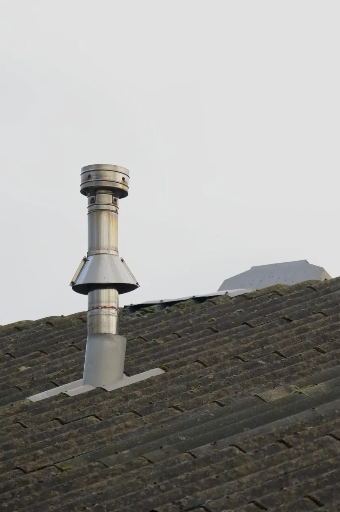

Roof maintenance and repair is an essential part of being a homeowner. But whether you do some roof maintenance yourself or call in a professional, it’s important to know what you’re dealing with when it comes to roof anatomy.
What Are Some Common Types of Roof Materials?
A variety of roofing materials are required to build a structurally sound, water-resistant roof. Here are some of the most common materials roofers use today.
1. Slate
Slate is a type of naturally occurring rock used to make durable tiles. These tiles are known for making one of the most long-lasting, strong roofs.
2. Asphalt
Asphalt is a popular material used to make shingles. Asphalt shingles are widely used thanks to their durability, affordability, and ease of installation.
3. Cedar
Cedar wood is made into small rectangles called “shakes” to cover and protect a roof, often as an alternative to asphalt shingles. They are considered a high-end type of roofing material and typically have a rough look because the shakes are created from split cedar logs.
4. Fibre Cement
Most often used for siding projects, fibre cement is a type of construction material that is known for being strong and durable.
5. Laminated Shingles
This is a more refined, long-lasting type of asphalt shingle, also known as an architectural shingle.
What Are the Different Roof Parts?
From gutters to shingles, there are many architectural elements that go into the roofing structure. Check out the most relevant terms everyone should know.
1. Parapet
When the wall extends upward to meet the edge of the roof, this section is known as a parapet. It acts as a barrier and can also be found on other parts of a building, like walkways and balconies.
2. Gutter
A gutter is a horizontal, metal tube attached to the edges of the roof. Gutters work in conjunction with downspouts to collect water and then send it away from the roof.
3. Steeple
Commonly found on church roofs, a steeple is a type of tower found on the front of the roof and typically signifies that the building is used for religious purposes.
4. Turret
Turrets are a small form of tower installed on the ridge of a sloped roof, usually for decorative purposes. Many turrets are used to hold a bell or clock or to serve as an observation platform.
5. Shingle
Shingles are flat, rectangular pieces that are attached to the roof in an overlapping pattern to protect the roof. They are most commonly made of asphalt.
6. Valley
A valley is any spot on the roof where there’s a change in direction or angle. This creates a “v” or “w” shape where a piece of metal is then installed to allow water to flow off of the roof.
7. Eave
The eaves of the roof are where the roof edge hangs over the wall, which helps water flow away from the house.
8. Ridge
This is the highest point on the roof, where the two horizontal lines connect to make a peak.
9. Dormer
This is the part of the roof that stands up vertically on the top of a pitched roof. It usually incorporates a window and is used to add space to a loft or add windows to a roof.
10. Rake
Most often found on gable roofs, a rake is a slanted edge where the wall meets the house.
11. Chimney

This essential part of the roof sends hot gases and smoke away from the home’s furnace, stove, or fireplace and out into the air.
12. Chimney Cap
Chimney caps are made of steel or copper mesh. They go over the top of the chimney to protect it from debris and rain falling into the chimney.
13. Flue
This is an opening in the chimney that is used to send gases out from the fireplace or furnace. It is usually a duct or pipe but might also be referred to as a chimney vent or boiler.
14. Downspout
Installed on the side of the house, a downspout is connected to the gutter and sends rainwater away from the house.
What Are the Different Roof Types?
Roofing styles come in and out of fashion, depending on the period and region. Here are some of the most popular roofing types today.
1. Gable
One of the most common types of roofs you’ll find in America, a gable roof is made up of two sloping roof sections. These sections meet at the highest edge to create a horizontal ridge.
2. Hip
Shaped like a pyramid, this type of roof has all four sides sloping down toward the walls. There aren’t any gables or vertical areas of the roof.
3. Mansard
Mansard roofs are a type of hip roof, with four sides that gently slope downward. However, the four sides each have two slopes, with the second slope being steeper and including dormer windows.
Common Roof Construction Terms
Roofing professionals use a vocabulary that may sound foreign to the average person. We’ve explained some of the most relevant roofing construction terms to help you understand your roofing needs.
1. Truss
Trusses are a type of beam used to create the roof frame. They are usually made with 2x4s and placed at equal intervals across the top of the frame to strengthen the roof.
2. Slope
The incline of a roof is known as the slope, which is measured using a ratio called “pitch.” The pitch is calculated by measuring the vertical rise in comparison to the horizontal run. Most roof pitches are between 4/12 and 9/12.
3. Roof Vent
There are two types of common roof vents: intake vents and exhaust vents. Both are used to ventilate the roof, helping to regulate the temperature and minimize moisture in the attic.
4. Flashing
Flashing is a thin material used to send water away from vents, chimneys, or other important areas of the roof.
5. Ridge Vent
Like intake and exhaust vents, ridge vents are installed to help ventilate the roof and allow warm air and moisture to leave the attic. These vents are installed at the peak, or ridge, of the roof.
6. Roofing Cement/Mastic
This is a sticky, flexible product that is used to seal a roof and make it waterproof.
7. Drip edge
Drip edges are made of thin metal and installed on the edge of the roof. This ensures that the water flows away from the underlayment and fascia.
8. Roof Deck
Also known as sheathing, the roof deck is the wood under the shingles.
9. Soffit
This is the material under the eaves of the roof. It is used to install the fascia and gutters up against the wall.
10. Soil Stack Pipe
Also known as a soil vent pipe (SVP), this serves as a waste vent that sends water and other waste away from the house.
11. Span
Span is a measurement calculating the distance across the roof to the outer edges of the wall plates.
12. Underlayment
Underlayment is installed on top of the deck to create a water-resistant surface.
13. Fascia
A fascia is a wooden board running on the edge of the roof. It is installed along the trusses to support the lower roofing tiles and gutter.
14. Square
A roofing square is a form of measurement that is equal to 100 square feet. For example, a 35,000-square-foot roof would have 350 roofing squares.
Talk to a Roofing Professional Today
Once you’ve familiarized yourself with these common roofing terms, you may still have questions or need help with roofing repairs. In that case, American Roofing is ready to step in. As one of Utah’s most experienced roofing companies, we can handle any of your residential or commercial roofing needs. Contact us today to get a free roofing quote.
About the Author: Andrew Yorgason
Free estimates
Get a straight answer about your roof.
Free roof evaluation. We'll explain what we find, and if it can be repaired, we won't sell you a replacement.